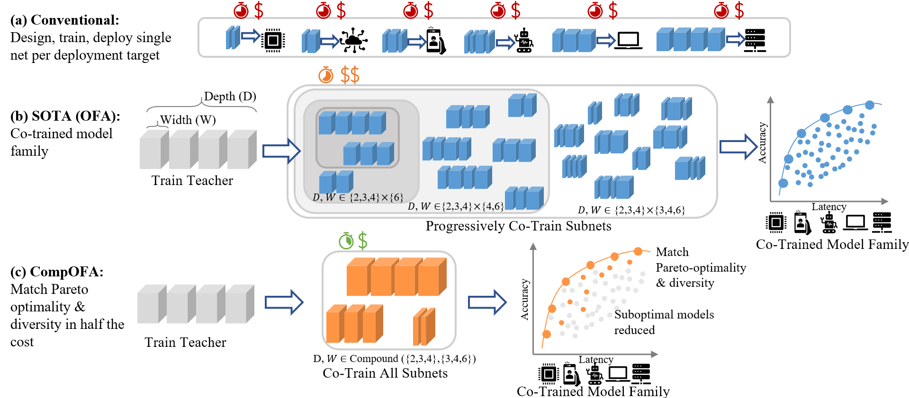
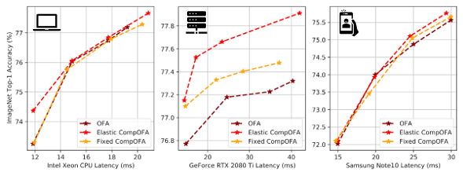
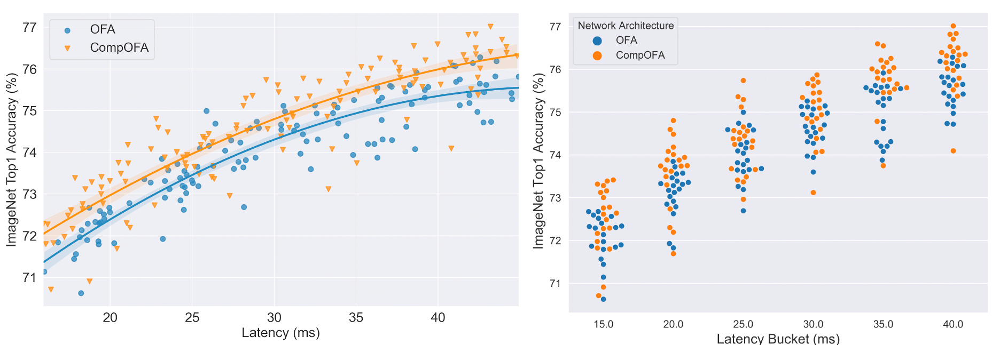

The emergence of CNNs in mainstream deployment has necessitated methods to design and train efficient architectures tailored to maximize the accuracy under diverse hardware & latency constraints.

Designing and training DNN architectures for each deployment target is not feasible. Each deployment costs training time, compute dollars, system expertise, ML expertise, CO2 emissions.
In CompOFA, we propose a cost-effective and faster technique to build model families that support multiple deployment platforms. Using insights from model design and system deployment, we build upon the current best methods that take 40-50 GPU days of computation and make their training and searching processes faster by 2x and 200x, respectively – all while building a family of equally efficient and diverse models!

CompOFA matches efficiency and diversity of SOTA methods...

...with 2x faster training and 216x faster searching
Better overall average accuracy
At a population level, CompOFA has a higher concentration of accurate models

Learn more
Please check out our paper and poster at ICLR 2021! Our code and pretrained models are also available on our Github repository. Also check out our blog post!
{kind=link}
Citation
@inproceedings{compofa-iclr21,
author = {Manas Sahni and Shreya Varshini and Alind Khare and
Alexey Tumanov},
title = {{C}omp{OFA}: Compound Once-For-All Networks for Faster Multi-Platform Deployment},
month = {May},
booktitle = {Proc. of the 9th International Conference on Learning Representations},
series = {ICLR '21},
year = {2021},
url = {https://openreview.net/forum?id=IgIk8RRT-Z}
}